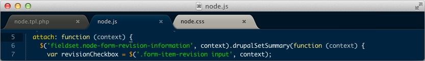

Настройки
Практически все параметры Sublime Text настраиваются вручную через файлы конфигурации. Это не самый удобный способ на свете, но зато очень гибкий. При желании, например, можно задать настройки для конкретного типа файлов или для отдельного проекта.
Для того, чтобы увидеть все доступные параметры, выберите пункт меню Preferences Settings - Default. В окне редактора откроется файл, который физически располагается тут: Packages/Default/Preferences.sublime-settings. Редактировать значения в нем крайне нежелательно, так как при следующем обновлении они скорее всего будут перезаписаны.
Основные настройки
Если вы хотите изменить какой-либо из параметров, откройте пользовательский файл настроек Preferences User - Default и скопируйте в него необходимый параметр. Например:
{
"tab_size": 4,
"translate_tabs_to_spaces": false
}
Отдельные настройки для каждого языка
Кроме этого, можно задать специфичные настройки для каждого языка. Откройте какой-нибудь файл для редактирования, а затем выберите пункт меню Preferences Settings - More Syntax Specific - User. Редактор сам создаст нужный файл настроек. Таким образом, например, можно задать цветовую схему для каждого типа файлов.

Настройки для проектов
Если вы используете проекты, то для них тоже можно переопределить некоторые параметры.
Подробнее на странице описания работы с проектами.
Настройка отвлеченного режима
Настройки отвлеченного режима из меню Preferences Settings - More Distraction Free - User.
Большинство опций, доступных в меню, переключаются сочетанием горячих клавиш. Но если нужный вам параметр такового не имеет, его можно задать самому. Для этого используется команда toggle_setting. Выберите пункт меню Preferences Key Bindings - User. Вставьте, например, следующий код:
[
{
"keys": ["alt+w"],
"command": "toggle_setting",
"args":
{
"setting": "word_wrap"
}
}
]
Теперь, в текущем файле, при кажом нажатии altw будет включаться или отключаться перенос слов.
Если необходимо задать параметр со значением, используйте команду set_setting. Вставьте, например, следующий код:
[
{
"keys": ["ctrl+k", "ctrl+c"],
"command": "set_setting",
"args":
{
"setting": "color_scheme",
"value": "Packages/Color Scheme - Default/Cobalt.tmTheme"
}
}
]
Теперь, при последовательном нажатии двух сочетаний клавиш ctrlk, ctrlc в текущем файле подсветка синтаксиса переключится на тему Cobalt.
Приоритет файлов настроек
При конфигурации редактора следует иметь ввиду порядок, в котором файлы настроек переопределяют друг друга:
Решение проблем
Так как одни и те же настройки могут быть заданы в различных местах, бывает полезно определить, какое значение имеет тот или иной параметр в текущем файле. Например, для параметра font_face, откройте консоль и наберите:
view.settings().get('font_face')